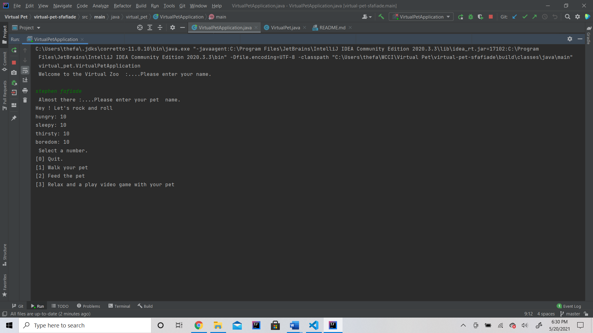
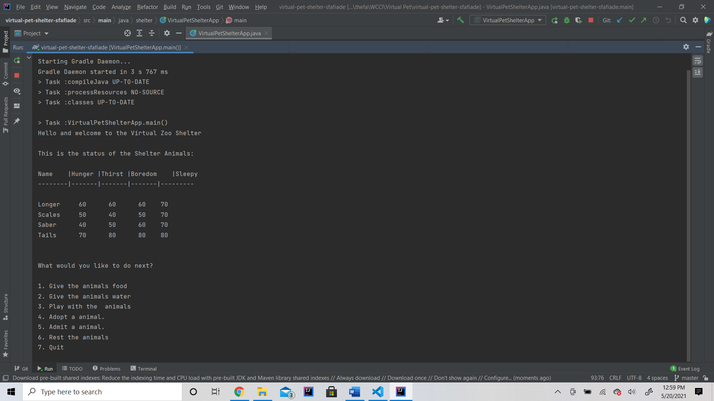
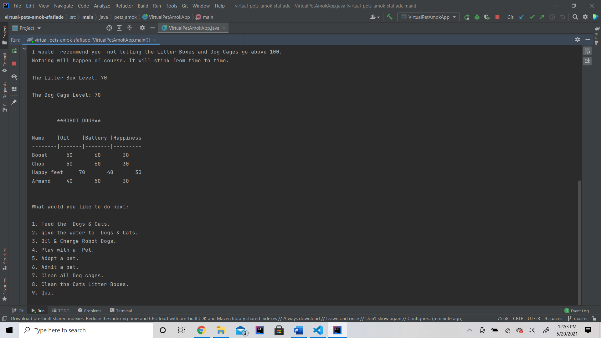

About Me
Education
Skills
- JavaScript
- C#
- C++
- SQL
- HTML
- Visual Basic
- WordPress
Work Experience
SmartSource
March 2019 – Present
Technician
Sabina Systems
Contact-(614) 573-6444
April 2011 – Present
Technician
Amazon
Contact- (877) 684-5069
July 2019 – Present
Warehouse associate
FedEx Ground
Contact-(800) 463-3339
July 2019 – Present
Package handler
My Projects
Virtual Pet
Java was was used for this program
Virtual Pet Shelter
Java was used for this program
Virtual Pet Amok
Java was used for this program